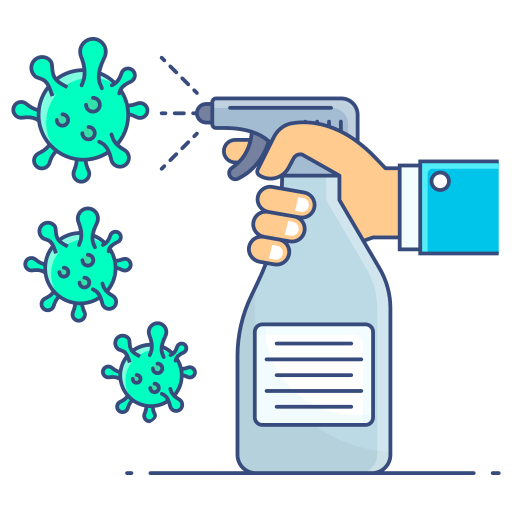

01 / Higjiena
Dezinfektim
Trajtim higjienik që synon reduktimin e mikroorganizmave në ambiente.
Mëso më shumëZgjidhje për ambiente dhe agrobiznese
Nga dezinfektimi, dezinsektimi dhe deratizimi te asistenca për grante, subvencione dhe plane biznesi për agrobizneset.

Ilustrime të dezinfektimit, dezinsektimit, deratizimit dhe agrobiznesit.
Fushat tona
Zgjidhni një fushë për të lexuar më shumë rreth shërbimeve të AgroConsulting Plus.
01 / Higjiena
Trajtim higjienik që synon reduktimin e mikroorganizmave në ambiente.
Mëso më shumë
02 / Mbrojtja
Kontrolli dhe eliminimi i insekteve të dëmshme në hapësirat tuaja.
Mëso më shumë
03 / Kontrolli
Menaxhimi dhe eliminimi i brejtësve për të mbrojtur ambientin.
Mëso më shumë04 / Zhvillimi
Asistencë për grante, subvencione dhe plane biznesi.
Mëso më shumëShërbimi 01 / Higjiena
AgroConsulting Plus e përshkruan dezinfektimin si shërbim profesional për higjienën dhe mirëqenien e ambienteve. Sipas faqes origjinale, trajtimi synon eliminimin e baktereve, viruseve dhe mikroorganizmave të tjerë, si dhe mbështetjen e një ambienti të pastër e të shëndetshëm.
Shërbimi 02 / Mbrojtja
Dezinsektimi synon kontrollin dhe eliminimin e insekteve të dëmshme në ambiente. Faqja origjinale përmend mushkonjat, buburrecat dhe insekte të tjera, dhe e përshkruan shërbimin si mënyrë për të ndihmuar në ruajtjen e hapësirave të pastra e të sigurta.
Shërbimi 03 / Kontrolli
Deratizimi përqendrohet në menaxhimin dhe eliminimin e minjve dhe brejtësve. Kompania e paraqet këtë shërbim si pjesë të mbrojtjes së ambienteve, pronës dhe shëndetit nga problemet që mund të shkaktojë prania e brejtësve.
Shërbimi 04 / Zhvillimi
AgroConsulting Plus ofron asistencë për zhvillimin e agrobizneseve dhe aktiviteteve bujqësore. Informacioni origjinal përfshin ndihmën për përfitimin e granteve dhe subvencioneve, hartimin e planeve të biznesit dhe udhëzimin e klientëve gjatë procesit.
Vlera në praktikë
Fokusi bazohet në aktivitetet që kompania paraqet në faqen e saj.
Dezinfektimi përshkruhet si pjesë e kujdesit për higjienën dhe mirëqenien e hapësirave.
Kontrolli i insekteve dhe brejtësve synon të ndihmojë në mbrojtjen e ambienteve.
Planet e biznesit, grantet dhe subvencionet janë pjesë e asistencës për agrobizneset dhe fermerët.
AgroConsulting Plus
Kontaktoni AgroConsulting Plus për më shumë informacione rreth shërbimeve higjienike dhe asistencës për agrobizneset.